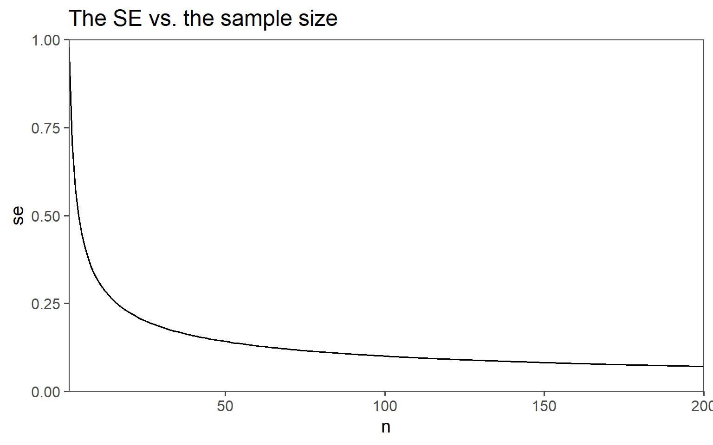
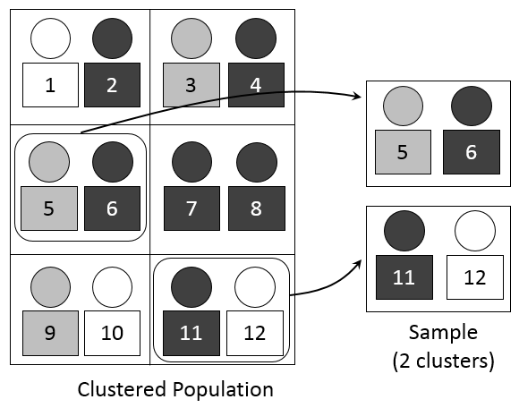

Sampling Methods
Sample Size
Standard Error

Random Sampling
- Definition: Selecting a sample from a population in a purely random manner, where every individual has an equal chance of being chosen.
- Advantages:
- Eliminates bias in selection.
- Results are often representative of the population.
- Disadvantages:
- Possibility of unequal representation of subgroups.
- Time-consuming and may not be practical for large populations.
Stratified Sampling

- Definition: Dividing the population into subgroups or strata based on certain characteristics and then randomly sampling from each stratum.
- Advantages:
- Ensures representation from all relevant subgroups.
- Increased precision in estimating population parameters.
- Disadvantages:
- Requires accurate classification of the population into strata.
- Complexity in implementation and analysis.
Systematic Sampling

- Definition: Choosing every kth individual from a list after selecting a random starting point.
- Advantages:
- Simplicity in execution compared to random sampling.
- Suitable for large populations.
- Disadvantages:
- Susceptible to periodic patterns in the population.
- If the periodicity aligns with the sampling interval, it can introduce bias.
Cluster Sampling

Definition: Dividing the population into clusters, randomly selecting some clusters, and then including all individuals from the chosen clusters in the sample.
Advantages:
- Cost-effective, especially for geographically dispersed populations.
- Reduces logistical challenges compared to other methods.
Disadvantages:
- Increased variability within clusters compared to other methods.
- Requires accurate information on cluster characteristics.
Example - The Star Wars dataset
Get to know the data
name height mass hair_color
Length:87 Min. : 66.0 Min. : 15.00 Length:87
Class :character 1st Qu.:167.0 1st Qu.: 55.60 Class :character
Mode :character Median :180.0 Median : 79.00 Mode :character
Mean :174.6 Mean : 97.31
3rd Qu.:191.0 3rd Qu.: 84.50
Max. :264.0 Max. :1358.00
NA's :6 NA's :28
skin_color eye_color birth_year sex
Length:87 Length:87 Min. : 8.00 Length:87
Class :character Class :character 1st Qu.: 35.00 Class :character
Mode :character Mode :character Median : 52.00 Mode :character
Mean : 87.57
3rd Qu.: 72.00
Max. :896.00
NA's :44
gender homeworld species
Length:87 Length:87 Length:87
Class :character Class :character Class :character
Mode :character Mode :character Mode :character
Simple Random Sampling
starwars_srswor <- starwars %>%
sample_n(size = 5)
starwars_srswor # A tibble: 5 × 11
name height mass hair_color skin_color eye_color birth_year sex gender
<chr> <int> <dbl> <chr> <chr> <chr> <dbl> <chr> <chr>
1 Jek Tono… 180 110 brown fair blue NA <NA> <NA>
2 Rey NA NA brown light hazel NA fema… femin…
3 Shmi Sky… 163 NA black fair brown 72 fema… femin…
4 C-3PO 167 75 <NA> gold yellow 112 none mascu…
5 Yoda 66 17 white green brown 896 male mascu…
# ℹ 2 more variables: homeworld <chr>, species <chr>Simple Random Sampling with replacment
starwars_srswr <- starwars %>%
sample_n(size = 5,
replace = TRUE)
starwars_srswr # A tibble: 5 × 11
name height mass hair_color skin_color eye_color birth_year sex gender
<chr> <int> <dbl> <chr> <chr> <chr> <dbl> <chr> <chr>
1 Zam Wese… 168 55 blonde fair, gre… yellow NA fema… femin…
2 Ben Quad… 163 65 none grey, gre… orange NA male mascu…
3 Ben Quad… 163 65 none grey, gre… orange NA male mascu…
4 Mas Amed… 196 NA none blue blue NA male mascu…
5 Cordé 157 NA brown light brown NA <NA> <NA>
# ℹ 2 more variables: homeworld <chr>, species <chr>Sampling with replacment, sample larger than original data
starwars_srswr2 <- starwars %>%
sample_n(size = 200,
replace = TRUE)
starwars_srswr2 # A tibble: 200 × 11
name height mass hair_color skin_color eye_color birth_year sex gender
<chr> <int> <dbl> <chr> <chr> <chr> <dbl> <chr> <chr>
1 Jocasta… 167 NA white fair blue NA fema… femin…
2 Ric Olié 183 NA brown fair blue NA male mascu…
3 IG-88 200 140 none metal red 15 none mascu…
4 Jocasta… 167 NA white fair blue NA fema… femin…
5 IG-88 200 140 none metal red 15 none mascu…
6 Cordé 157 NA brown light brown NA <NA> <NA>
7 Poe Dam… NA NA brown light brown NA male mascu…
8 Palpati… 170 75 grey pale yellow 82 male mascu…
9 Padmé A… 185 45 brown light brown 46 fema… femin…
10 Rey NA NA brown light hazel NA fema… femin…
# ℹ 190 more rows
# ℹ 2 more variables: homeworld <chr>, species <chr>mean(starwars$height, na.rm = TRUE) [1] 174.6049mean(starwars_srswr2$height, na.rm = TRUE)[1] 173.172Systematic Sampling
Sample always the \(5th\).
starwars_syst <- starwars %>%
slice(seq(sample(1:5, 1),
nrow(starwars),
by = 5))
starwars_syst # A tibble: 17 × 11
name height mass hair_color skin_color eye_color birth_year sex gender
<chr> <int> <dbl> <chr> <chr> <chr> <dbl> <chr> <chr>
1 Darth V… 202 136 none white yellow 41.9 male mascu…
2 Biggs D… 183 84 black light brown 24 male mascu…
3 Han Solo 180 80 brown fair brown 29 male mascu…
4 Yoda 66 17 white green brown 896 male mascu…
5 Lando C… 177 79 black dark brown 31 male mascu…
6 Wicket … 88 20 brown brown brown 8 male mascu…
7 Padmé A… 185 45 brown light brown 46 fema… femin…
8 Watto 137 NA black blue, grey yellow NA male mascu…
9 Bib For… 180 NA none pale pink NA male mascu…
10 Ben Qua… 163 65 none grey, gre… orange NA male mascu…
11 Adi Gal… 184 50 none dark blue NA fema… femin…
12 Gregar … 185 85 black dark brown NA <NA> <NA>
13 Barriss… 166 50 black yellow blue 40 fema… femin…
14 Zam Wes… 168 55 blonde fair, gre… yellow NA fema… femin…
15 R4-P17 96 NA none silver, r… red, blue NA none femin…
16 Tarfful 234 136 brown brown blue NA male mascu…
17 Rey NA NA brown light hazel NA fema… femin…
# ℹ 2 more variables: homeworld <chr>, species <chr>Stratified Sampling
table(starwars$sex)
female hermaphroditic male none
16 1 60 6 starwars_strat <- starwars %>%
group_by(sex) %>%
sample_frac(size = 0.3)
starwars_strat # A tibble: 26 × 11
# Groups: sex [4]
name height mass hair_color skin_color eye_color birth_year sex gender
<chr> <int> <dbl> <chr> <chr> <chr> <dbl> <chr> <chr>
1 Ayla Se… 178 55 none blue hazel 48 fema… femin…
2 Luminar… 170 56.2 black yellow blue 58 fema… femin…
3 Jocasta… 167 NA white fair blue NA fema… femin…
4 Shmi Sk… 163 NA black fair brown 72 fema… femin…
5 Taun We 213 NA none grey black NA fema… femin…
6 Finn NA NA black dark dark NA male mascu…
7 Rugor N… 206 NA none green orange NA male mascu…
8 Lobot 175 79 none light blue 37 male mascu…
9 Jar Jar… 196 66 none orange orange 52 male mascu…
10 Qui-Gon… 193 89 brown fair blue 92 male mascu…
# ℹ 16 more rows
# ℹ 2 more variables: homeworld <chr>, species <chr>table(starwars_strat$sex)
female male none
5 18 2 Clustered Sampling
name height mass hair_color
Length:19 Min. : 97.0 Min. : 32.0 Length:19
Class :character 1st Qu.:169.5 1st Qu.: 75.0 Class :character
Mode :character Median :178.0 Median : 79.0 Mode :character
Mean :173.9 Mean : 171.2
3rd Qu.:188.0 3rd Qu.: 116.5
Max. :216.0 Max. :1358.0
NA's :4
skin_color eye_color birth_year sex
Length:19 Length:19 Min. : 19.00 Length:19
Class :character Class :character 1st Qu.: 37.00 Class :character
Mode :character Mode :character Median : 47.00 Mode :character
Mean : 93.29
3rd Qu.: 72.00
Max. :600.00
NA's :6
gender homeworld species
Length:19 Length:19 Length:19
Class :character Class :character Class :character
Mode :character Mode :character Mode :character
Bootstrapping

Definition: Estimating sample statistic distribution by drawing new samples with replacement from observed data, providing insights into variability without strict population distribution assumptions.
Advantages:
- Non-parametric: Works without assuming a specific data distribution.
- Confidence Intervals: Facilitates easy estimation of confidence intervals.
- Robustness: Reliable for small sample sizes or unknown data distributions.
Disadvantages:
- Computationally Intensive: Resource-intensive for large datasets.
- Results quality relies on the representativeness of the initial sample (garbage in - garbage out).
- Cannot compensate for inadequate information in the original sample.
- Not Always Optimal: Traditional methods may be better in cases meeting distribution assumptions.